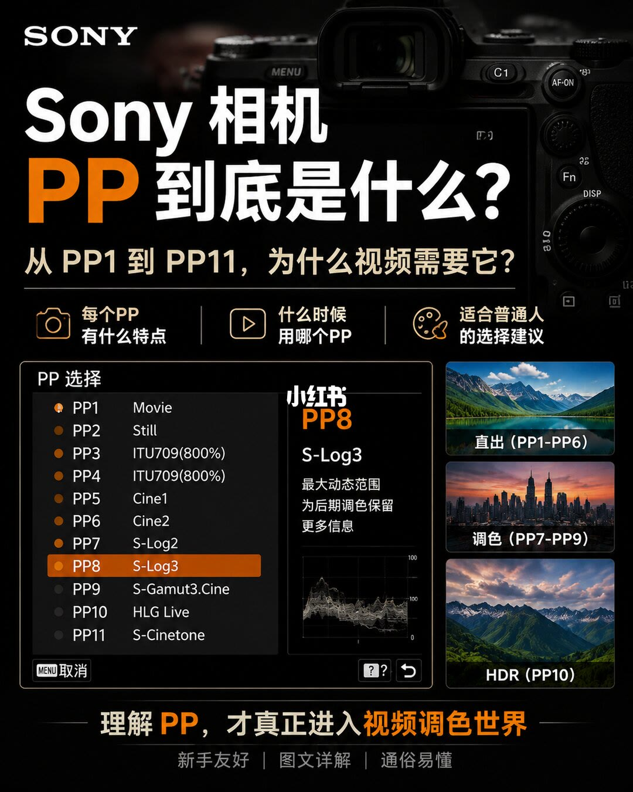
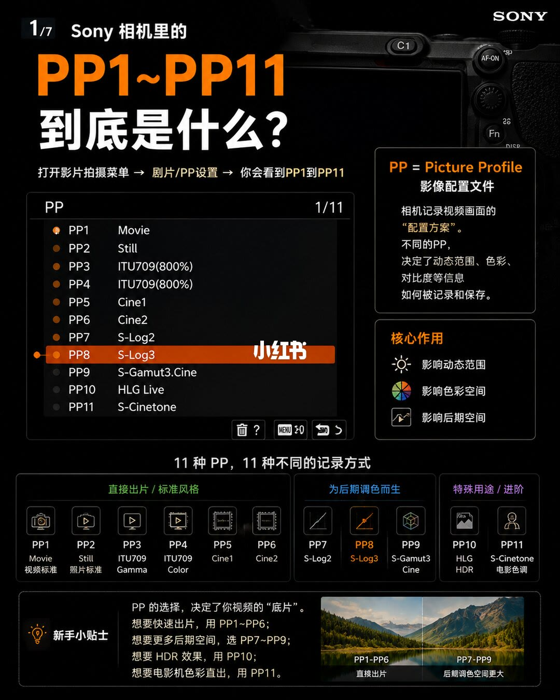
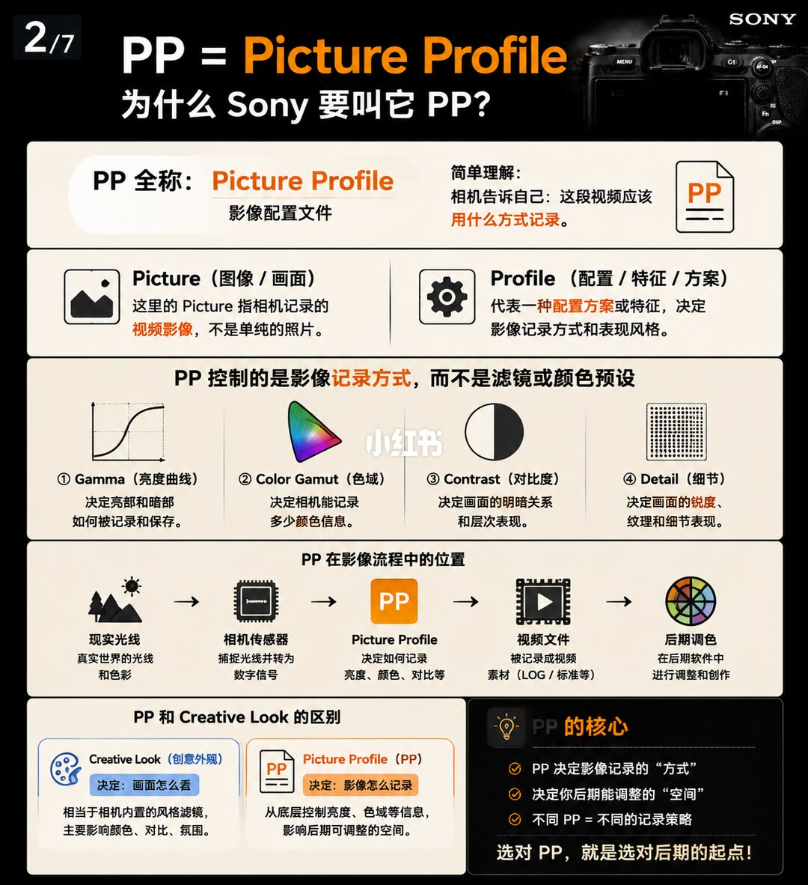
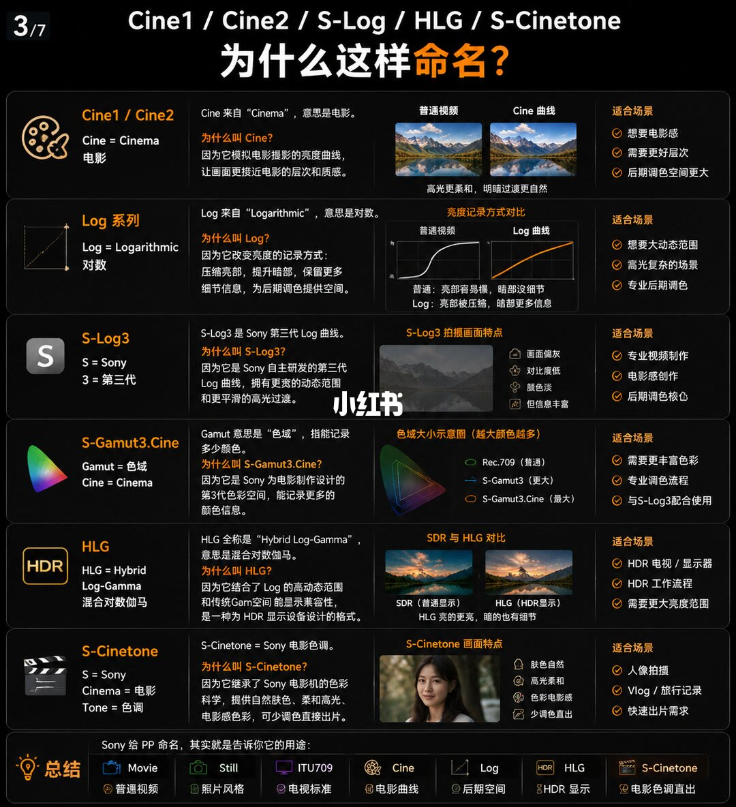
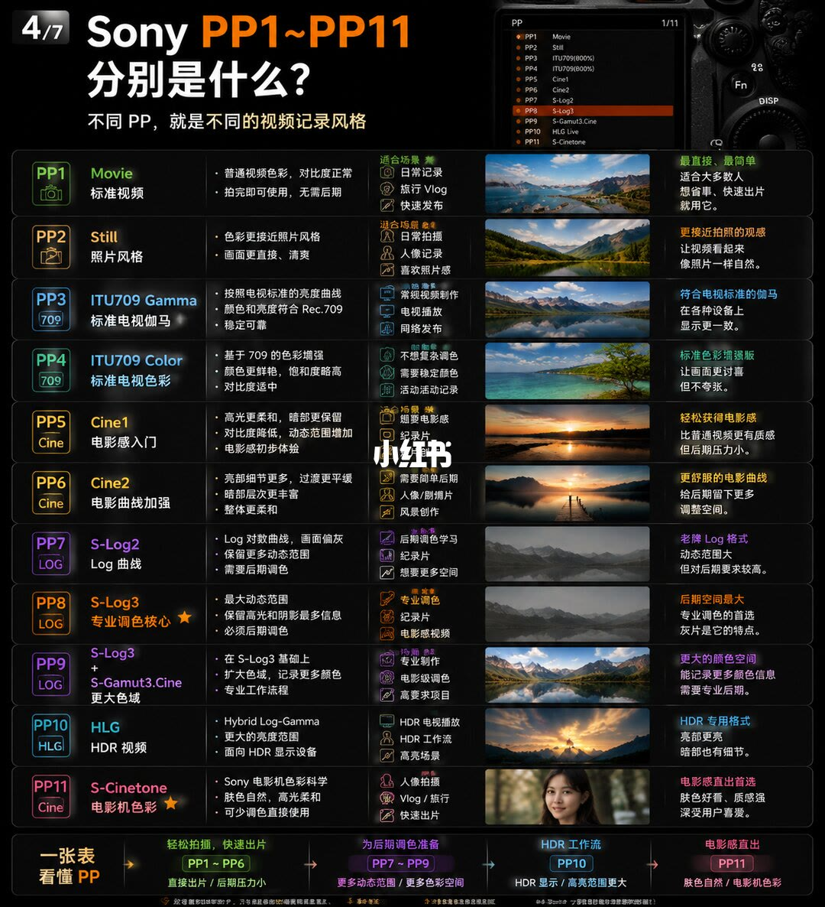
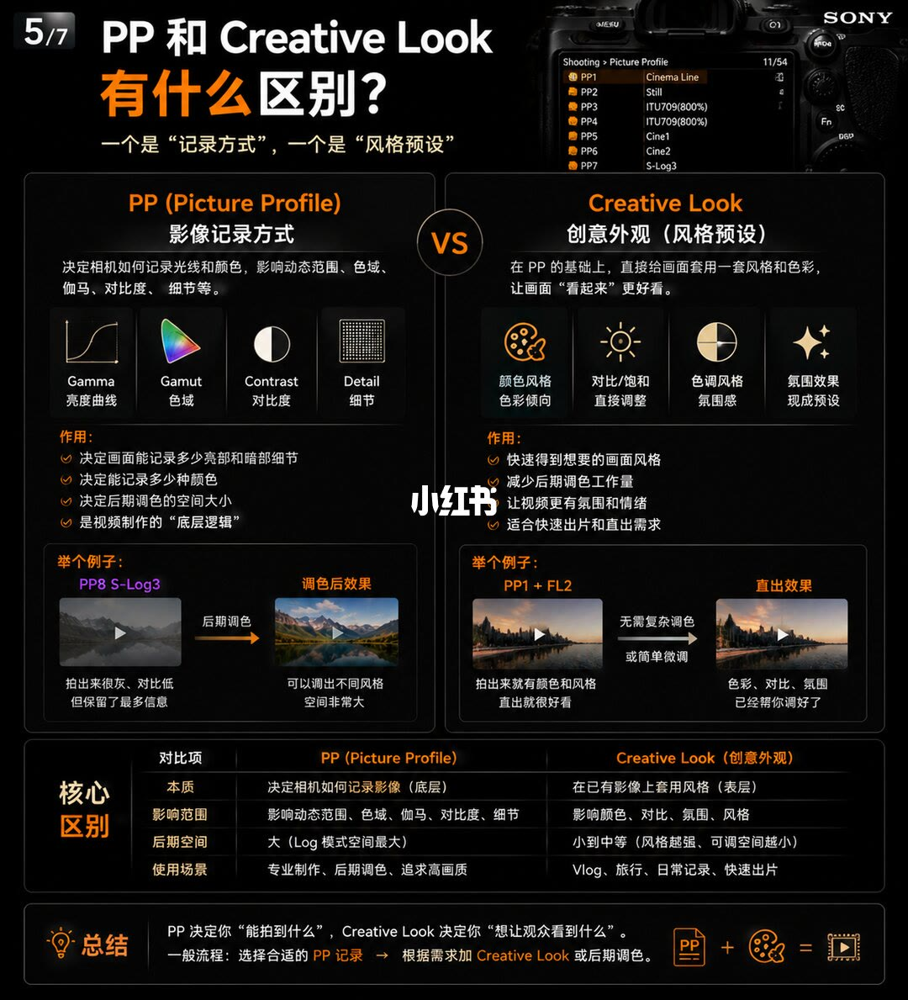
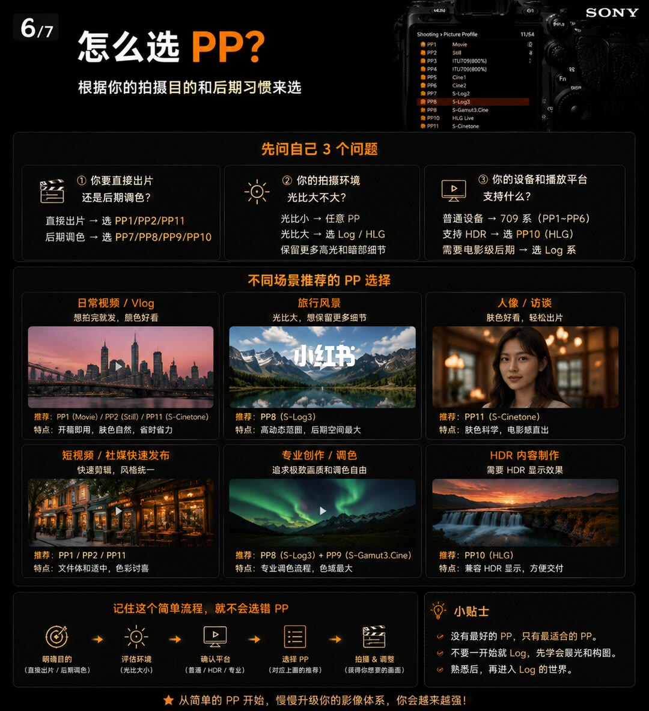
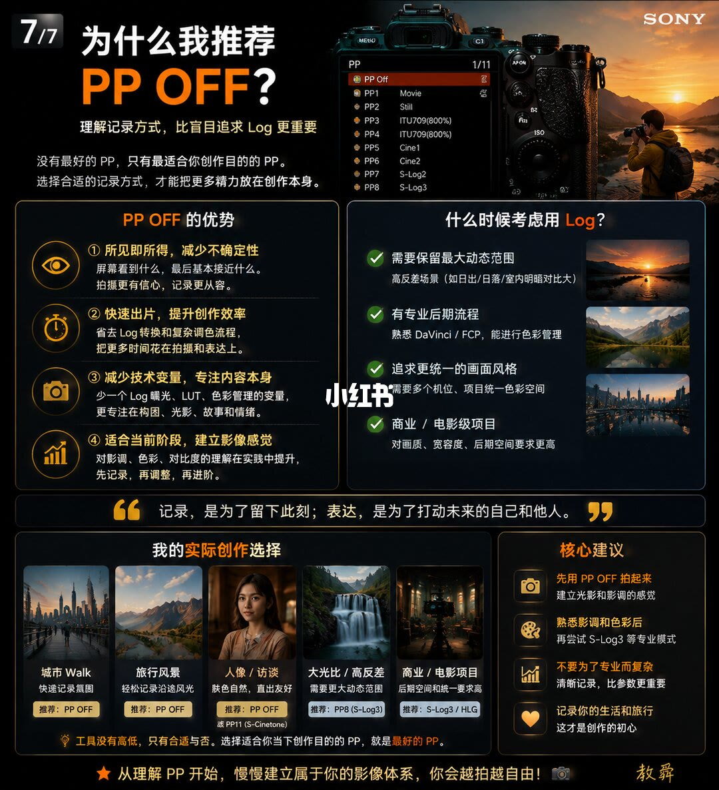

图文实录 · 小红书 · 敖舜
Sony 相机12种PP模式祥解
标题写「12 种」。图上编号只印到 PP1–PP11，正文写「11 种 PP，11 种不同的记录方式」。第 8 页另有菜单项 PP Off，没有印出第 12 个编号。PP 在这组图里是记录方式：管动态范围、色域、对比和后期空间，不是滤镜。
1/8
封面只列到 PP11
封面问「Sony 相机 PP 到底是什么？」，副题是「从 PP1 到 PP11，为什么视频需要它？」。三条要讲的事：每个 PP 有什么特点、什么时候用哪个 PP、适合普通人的选择建议。
左侧菜单「PP 选择」印出 11 行：PP1 Movie，PP2 Still，PP3 ITU709（800%），PP4 ITU709（800%），PP5 Cine1，PP6 Cine2，PP7 S-Log2，PP8 S-Log3（选中），PP9 S-Gamut3.Cine，PP10 HLG Live，PP11 S-Cinetone。PP3 与 PP4 在这张菜单上的英文名相同，都是 ITU709（800%）。中间放大 PP8 S-Log3，只写两句：最大动态范围；为后期调色保留更多信息。右侧三张示意：直出（PP1-PP6）、调色（PP7-PP9）、HDR（PP10）。PP11 没有进这三格。页脚：理解 PP，才真正进入视频调色世界。标签：新手友好、图文详解、通俗易懂。这页没有黑电平、ISO 或曝光补偿数字。

2/8
PP 是记录方案，分成三组
图内页码印的是 1/7。标题：「Sony 相机里的 PP1~PP11 到底是什么？」路径写成：打开影片拍摄菜单 → 剧片/PP设置 → 你会看到 PP1 到 PP11。「剧片」按图上字形实录。定义：PP = Picture Profile，影像配置文件；相机记录视频画面的「配置方案」；不同 PP 决定动态范围、色彩、对比度等信息如何被记录和保存。核心作用三条：影响动态范围、影响色彩空间、影响后期空间。
中间标题：「11 种 PP，11 种不同的记录方式。」三组：直接出片/标准风格为 PP1 Movie（视频标准）、PP2 Still（照片标准）、PP3 ITU709 Gamma、PP4 ITU709 Color、PP5 Cine1、PP6 Cine2；为后期调色而生为 PP7 S-Log2、PP8 S-Log3、PP9 S-Gamut3.Cine；特殊用途/进阶为 PP10 HLG HDR、PP11 S-Cinetone（电影色调）。新手小贴士：PP 的选择决定视频的「底片」。想快速出片用 PP1~PP6；想要更多后期空间选 PP7~PP9；想要 HDR 效果用 PP10；想要电影机色彩直出用 PP11。对照图：PP1-PP6 直接出片，PP7-PP9 后期调色空间更大。

3/8
记录方式，不是颜色预设
图内页码 2/7。标题：PP = Picture Profile，为什么 Sony 要叫它 PP。全称：Picture Profile，影像配置文件。简单理解：相机告诉自己，这段视频应该用什么方式记录。Picture 指相机记录的视频影像，不是单纯的照片。Profile 代表一种配置方案或特征，决定影像记录方式和表现风格。
总句：PP 控制的是影像记录方式，而不是滤镜或颜色预设。四项：Gamma（亮度曲线）决定亮部和暗部如何被记录和保存；Color Gamut（色域）决定相机能记录多少颜色信息；Contrast（对比度）决定画面的明暗关系和层次表现；Detail（细节）决定锐度、纹理和细节表现。流程五格：现实光线（真实世界的光线和色彩）→ 相机传感器（捕捉光线并转为数字信号）→ Picture Profile（决定如何记录亮度、颜色、对比等）→ 视频文件（素材，写成 LOG / 标准等）→ 后期调色（在后期软件中调整和创作）。
和 Creative Look 并排：Creative Look（创意外观）决定画面怎么看，相当于机内风格滤镜，主要影响颜色、对比、氛围；Picture Profile 决定影像怎么记录，从底层控制亮度、色域等信息，影响后期可调整的空间。核心：PP 决定记录的「方式」，决定后期能调整的「空间」，不同 PP 等于不同记录策略。收句：选对 PP，就是选对后期的起点。

4/8
名字在说用途，色域图按图上的大小标注
图内页码 3/7。标题：Cine1 / Cine2 / S-Log / HLG / S-Cinetone，为什么这样命名？
Cine1 / Cine2：Cine = Cinema，来自「Cinema」，意思是电影。命名理由：模拟电影摄影的亮度曲线，让画面更接近电影的层次和质感。对照写高光更柔和、明暗过渡更自然。适合：想要电影感、需要更好层次、后期调色空间更大。
Log 系列：Log = Logarithmic，对数。改变亮度记录方式：压缩亮部，提升暗部，保留更多细节，为后期提供空间。对照句：普通视频亮部容易爆、暗部没细节；Log 亮部被压缩、暗部更多信息。适合：想要大动态范围、高光复杂的场景、专业后期调色。
S-Log3：S = Sony，3 = 第三代。写成 Sony 自主研发的第三代 Log 曲线，拥有更宽的动态范围和更平滑的高光过渡。画面特点：画面偏灰、对比度低、颜色淡、但信息丰富。适合：专业视频制作、电影感创作、后期调色核心。
S-Gamut3.Cine：Gamut = 色域，Cine = Cinema。Gamut 指能记录多少颜色。写成 Sony 为电影制作设计的第 3 代色彩空间，能记录更多颜色信息。示意图标题是「越大颜色越多」，图例印的是：Rec.709（普通）、S-Gamut3（更大）、S-Gamut3.Cine（最大）。适合：需要更丰富色彩、专业调色流程、与 S-Log3 配合使用。图上没有色域体积数字。
HLG：HLG = Hybrid Log-Gamma，混合对数伽马。结合 Log 的高动态范围和传统 Gamma 的显示兼容，是为 HDR 显示设备设计的格式。对照：SDR（普通显示）与 HLG（HDR 显示）；HLG 亮的更亮，暗的也有细节。适合：HDR 电视/显示器、HDR 工作流程、需要更大亮度范围。
S-Cinetone：S = Sony，Cinema = 电影，Tone = 色调。继承 Sony 电影机色彩科学，提供自然肤色、柔和高光、电影感色彩，可少调色直接出片。画面特点：肤色自然、高光柔和、色彩电影感、少调色直出。适合：人像拍摄、Vlog / 旅行记录、快速出片需求。
页底总结：Movie 普通视频，Still 照片风格，ITU709 电视标准，Cine 电影曲线，Log 后期空间，HLG 为 HDR 显示，S-Cinetone 电影色调直出。

5/8
十一档各自印了特点、场景和一句判断
图内页码 4/7。标题：Sony PP1~PP11 分别是什么？不同 PP，就是不同的视频记录风格。右上菜单仍是 PP1 Movie 到 PP11 S-Cinetone，PP3、PP4 都印 ITU709（800%）。每行是特点、适合场景和一句判断。没有另行给出伽马数值或黑电平。
PP1 Movie，标准视频：普通视频色彩，对比度正常；拍完即可使用，无需后期。场景：日常记录、旅行 Vlog、快速发布。判断：最直接、最简单，适合大多数人，想省事、快速出片就用它。
PP2 Still，照片风格：色彩更接近照片风格；画面更直接、清爽。场景：日常拍摄、人像记录、喜欢照片感。判断：更接近拍照的观感，让视频看起来像照片一样自然。
PP3 ITU709 Gamma，标准电视伽马：按照电视标准的亮度曲线；颜色和亮度符合 Rec.709；稳定可靠。场景：常规视频制作、电视播放、网络发布。判断：符合电视标准的伽马，在各种设备上显示更一致。
PP4 ITU709 Color，标准电视色彩：基于 709 的色彩增强；颜色更鲜艳，饱和度略高；对比度适中。场景：不想复杂调色、需要稳定颜色、活动记录。判断：标准色彩增强版，让画面更讨喜但不夸张。菜单里 PP4 仍写 ITU709（800%），和 PP3 的菜单名相同，区别写在这行的「Gamma / Color」上。
PP5 Cine1，电影感入门：高光更柔和，暗部更保留；对比度降低，动态范围增加；电影感初步体验。场景：想要电影感、纪录片。判断：轻松获得电影感，比普通视频更有质感，但后期压力小。
PP6 Cine2，电影曲线加强：亮部细节更多，过渡更平缓；暗部层次更丰富；整体更柔和。场景：需要简单后期、人像/剧情片、风景创作。判断：更舒服的电影曲线，给后期留下更多调整空间。
PP7 S-Log2，Log 曲线：Log 对数曲线，画面偏灰；保留更多动态范围；需要后期调色。场景：后期调色学习、纪录片、想要更多空间。判断：老牌 Log 格式，动态范围大，但对后期要求较高。
PP8 S-Log3，专业调色核心（带星标）：最大动态范围；保留高光和阴影最多信息；必须后期调色。场景：专业调色、纪录片、电影感视频。判断：后期空间最大，专业调色的首选，灰片是它的特点。
PP9 这一行的名称印成 S-Log3 与 S-Gamut3.Cine，副题更大色域。特点：在 S-Log3 基础上；扩大色域，记录更多颜色；专业工作流程。场景：专业制作、电影级调色、高要求项目。判断：更大的颜色空间，能记录更多颜色信息，需要专业后期。菜单名仍只写 S-Gamut3.Cine。
PP10 HLG，HDR 视频：Hybrid Log-Gamma；更大的亮度范围；面向 HDR 显示设备。场景：HDR 电视播放、HDR 工作流、高亮场景。判断：HDR 专用格式，亮部更亮，暗部也有细节。
PP11 S-Cinetone，电影机色彩（带星标）：Sony 电影机色彩科学；肤色自然，高光柔和；可少调色直接使用。场景：人像拍摄、Vlog / 旅行、快速出片。判断：电影感直出首选，肤色好看、质感强，深受用户喜爱。
页底「一张表看懂 PP」：轻松拍摄、快速出片是 PP1~PP6，直接出片 / 后期压力小；为后期调色准备是 PP7~PP9，更多动态范围 / 更多色彩空间；HDR 工作流是 PP10，HDR 显示 / 高亮范围更大；电影感直出是 PP11，肤色自然 / 电影机色彩。

6/8
一个管记录，一个管看起来
图内页码 5/7。标题：PP 和 Creative Look 有什么区别？一个是「记录方式」，一个是「风格预设」。右上相机屏路径是 Shooting > Picture Profile，屏上只看到 PP1 到 PP7，角标 11/54。这一屏的文字和前几页菜单不一致：PP1 印 Cinema Line，PP2 Still，PP3 ITU709（800%），PP4 ITU709（800%），PP5 Cine1，PP6 Cine2，PP7 印 S-Log3。前几页 PP1 是 Movie、PP7 是 S-Log2。这里按这一屏实录，不把两套名字合成一个。
左栏 PP（Picture Profile），影像记录方式：决定相机如何记录光线和颜色，影响动态范围、色域、伽马、对比度、细节等。四项仍是 Gamma 亮度曲线、Gamut 色域、Contrast 对比度、Detail 细节。作用：决定能记录多少亮部和暗部细节；决定能记录多少种颜色；决定后期调色的空间大小；是视频制作的「底层逻辑」。例子 PP8 S-Log3：拍出来很灰、对比低，但保留了最多信息；经过后期调色，可以调出不同风格，空间非常大。
右栏 Creative Look，创意外观（风格预设）：在 PP 的基础上，直接给画面套用一套风格和色彩，让画面「看起来」更好看。四项：颜色风格（色彩倾向）、对比/饱和（直接调整）、色调风格（氛围感）、氛围效果（现成预设）。作用：快速得到想要的画面风格；减少后期调色工作量；让视频更有氛围和情绪；适合快速出片和直出需求。例子印的是 PP1 + FL2：拍出来就有颜色和风格，直出就很好看；无需复杂调色或简单微调；色彩、对比、氛围已经帮你调好了。FL2 这页没有写全称。
核心区别表：本质上，PP 决定相机如何记录影像（底层），Creative Look 在已有影像上套用风格（表层）。影响范围：PP 是动态范围、色域、伽马、对比度、细节；Creative Look 是颜色、对比、氛围、风格。后期空间：PP 大（Log 模式空间最大）；Creative Look 小到中等（风格越强、可调空间越小）。使用场景：PP 是专业制作、后期调色、追求高画质；Creative Look 是 Vlog、旅行、日常记录、快速出片。总结：PP 决定你「能拍到什么」，Creative Look 决定你「想让观众看到什么」。流程：选择合适的 PP 记录，再根据需求加 Creative Look 或后期调色。

7/8
先问目的、光比和播放设备
图内页码 6/7。标题：怎么选 PP？根据拍摄目的和后期习惯来选。右上菜单这次又回到 PP1 Movie、PP7 S-Log2、PP8 S-Log3、PP9 S-Gamut3.Cine、PP10 HLG Live、PP11 S-Cinetone，路径同样是 Shooting > Picture Profile，角标 11/54。
先问自己 3 个问题。直接出片还是后期调色：直接出片选 PP1/PP2/PP11；后期调色选 PP7/PP8/PP9/PP10。拍摄环境光比大不大：光比小，任意 PP；光比大，选 Log / HLG，保留更多高光和暗部细节。设备和播放平台支持什么：普通设备用 709 系（PP1~PP6）；支持 HDR 选 PP10（HLG）；需要电影级后期选 Log 系。
六格推荐。日常视频 / Vlog，想拍完就发、颜色好看：PP1（Movie）/ PP2（Still）/ PP11（S-Cinetone），开箱即用，肤色自然，省时省力。旅行风景，光比大、想保留更多细节：PP8（S-Log3），高动态范围，后期空间最大。人像 / 访谈，肤色好看、轻松出片：PP11（S-Cinetone），肤色科学，电影感直出。短视频 / 社媒快速发布：PP1/PP2/PP11，文件体积适中，色彩讨喜。专业创作 / 调色：PP8（S-Log3）+ PP9（S-Gamut3.Cine），专业调色流程，色域最大。HDR 内容制作：PP10（HLG），兼容 HDR 显示，方便交付。
流程五步：明确目的（直接出片/后期调色）→ 评估环境（光比大小）→ 确认平台（普通/HDR/专业）→ 选择 PP（对应上面的推荐）→ 拍摄及调整。小贴士：没有最好的 PP，只有最适合的 PP；不要一开始就 Log，先学会曝光和构图；熟悉后，再进入 Log 的世界。页底：从简单的 PP 开始，慢慢升级你的影像体系，你会越来越强。

8/8
作者自己的选择从 PP Off 起
图内页码 7/7。标题：为什么我推荐 PP OFF？理解记录方式，比盲目追求 Log 更重要。开篇：没有最好的 PP，只有最适合你创作目的的 PP；选择合适的记录方式，才能把更多精力放在创作本身。菜单选中 PP Off，下面仍列出 PP1 movie、PP2 Still、PP3 与 PP4 的 ITU709（800%）、PP5 Cine1、PP6 Cine2、PP7 S-Log2、PP8 S-Log3。这一屏没有继续印出 PP9–PP11。
PP OFF 的优势四条：所见即所得，减少不确定性，屏幕看到什么，最后基本接近什么；快速出片，省去 Log 转换和复杂调色流程；减少技术变量，少一个 Log 曝光、LUT、色彩管理的变量，把注意力放回构图、光影、故事和情绪；适合当前阶段建立影像感觉，先记录，再调整，再进阶。
什么时候考虑用 Log：需要保留最大动态范围，例子是高反差场景（日出/日落，以及室内明暗对比大）；有专业后期流程，熟悉 DaVinci / FCP，能进行色彩管理；追求更统一的画面风格，多机位、项目统一色彩空间；商业/电影级项目，对画质、宽容度、后期空间要求更高。
引文：记录，是为了留下此刻；表达，是为了打动未来的自己和他人。
「我的实际创作选择」五格：城市 Walk，快速记录氛围，推荐 PP OFF；旅行风景，轻松记录沿途风光，推荐 PP OFF；人像 / 访谈，肤色自然、直出友好，推荐 PP OFF 或 PP11（S-Cinetone）；大光比 / 高反差，需要更大动态范围，推荐 PP8（S-Log3）；商业 / 电影项目，后期空间和统一要求高，推荐 S-Log3 / HLG。核心建议：先用 PP OFF 拍起来，建立光影和影调的感觉；熟悉影调和色彩后，再尝试 S-Log3 等专业模式；不要为了专业而复杂，清晰记录比参数更重要；记录你的生活和旅行，这才是创作的初心。收句：工具没有高低，只有合适与否。选择适合你当下创作目的的 PP，就是最好的 PP。从理解 PP 开始，慢慢建立属于你的影像体系，你会越拍越自由。页脚落款印的是「教舜」。

汇总
先选记录方式，再决定要不要 Log
结论
图上能对上号的是 11 个 PP，外加第 8 页的 PP Off，对不上标题的「12 种」。PP1–PP6 被写成可直出的标准记录，PP7–PP9 留给后期，PP10 对 HDR 显示，PP11 是电影色调直出。第 7 页按目的、光比、播放设备来选；第 8 页把作者自己的日常选择收成 PP Off，只在大光比和商业项目上回到 S-Log3 / HLG。
支撑页
11 档名单在 1/8、2/8、5/8。记录方式和 Creative Look 的差别在 3/8、6/8。命名在 4/8。按场景推荐在 7/8。PP Off 与作者自己的五格选择在 8/8。
边界
图上没有黑电平、ISO、曝光补偿或 LUT 文件名。唯一带数字的模式名是 ITU709（800%），PP3 与 PP4 的菜单名相同，Gamma 与 Color 的差别只写在 2/8 和 5/8 的中文标签上。第 6 页菜单把 PP1 印成 Cinema Line、把可见的 PP7 印成 S-Log3，与其余页的 Movie、S-Log2 不一致，无法确认是哪一台机、哪一版菜单。FL2 没有全称。第 4 页把 S-Gamut3.Cine 标成比 S-Gamut3 更大，没有体积数字，不能改写成手册里的大小。第 7 页旅行风景推荐 PP8，第 8 页同一类场景推荐 PP OFF。图内页码是 1/7 到 7/7，封面没有这个分数，本页按 8 张图记成 1/8 到 8/8。页脚落款「教舜」与笔记作者名「敖舜」不是同一写法。